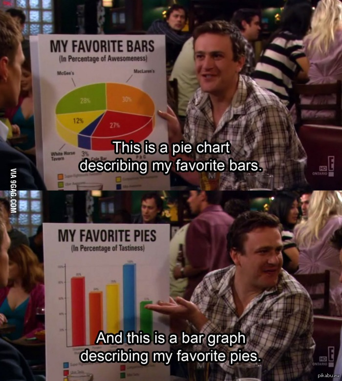

D3 and C3
topics
What is D3
Why you need it
How to use D3
What is C3
Сomparison C3 and D3
Сonclusions
What is D3
D3 is a JavaScript library for manipulating documents based on data. D3 helps you bring data to life using HTML, SVG, and CSS
Why you need D3

data visualization
data-driven manipulation with DOM
dynamic attribute assignment
How to use D3
Let's make some diagram
1) We need to get D3 object
2) Prepare some data
3) Create target HTMLElement
4) Define size and margins
5) Create first magic tool
The resulting object will help us calculate the coordinate and proportional width for elements representing data-items in our data
6) Another scale, vertical
This scale will help us with calculating heigth of our bars. Because y-0 is at the top of diagram element, we had to invert the scale
7) And now we starting to draw our diagram
All d3 metods return d3-element, so we can use long chain
8) Final part
With functions we have access to data-item, data and anything else
Take a look, what we've done
It's nice, but says nothing
9) We should add scales and ticks
Now it's better
Expectations
Reality
So, we can do anything. Step by step, one data-item after another. But, it will take so much time and efforts... And will it be pretty?
What if someone has already done all the preparatory work for us?
C3.js
C3 is framework for D3. It provides methods for the most popular cases
1) Download c3-files and preapre data
2) Use method generate
We can add some data
D3 vs C3
D3
+
control every step
flexibility
over 300 tools
-
complexity
design issues
C3
+
easy start
common templates
nice design
-
not flexible
closed process
Total
If you just need to show the data in some standard form - choose C3. Fast, simple, pretty
But if you need something special, a custom solution - only D3 will help you
Thank you
Created by
Troitskiy Andrew